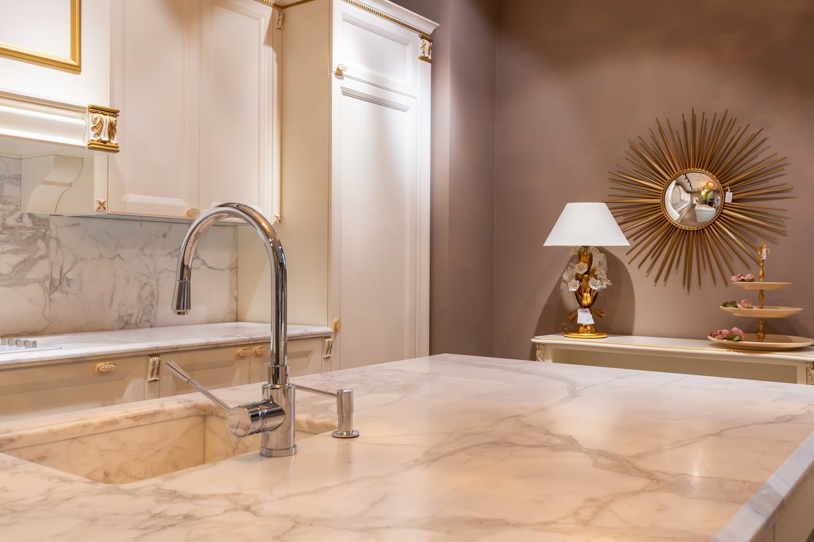
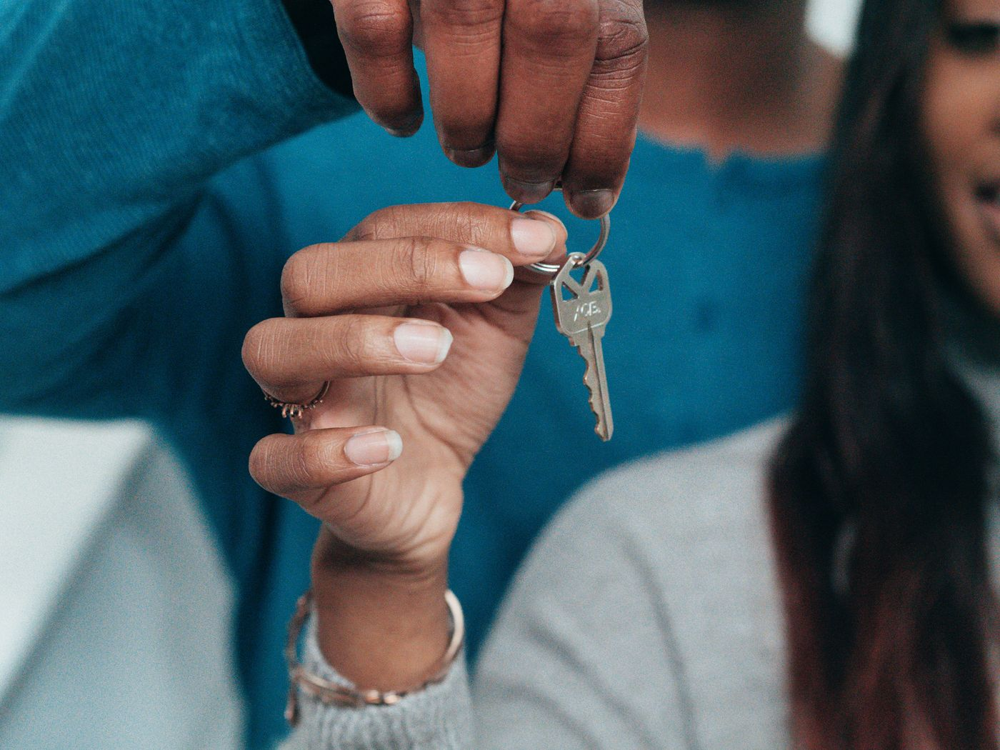

Quick answer: In NSW, any residential building work valued at $5,000 or more in labour and materials (including GST) requires a licensed contractor. For jobs between $5,000 and $20,000, a written contract is legally required. Sydney builders typically charge $85–$150 per hour, though most price small jobs on a fixed-price basis. Common small renovations run $5,000–$30,000 depending on scope. Finding a builder who will take on smaller work is a matter of knowing where to look — and knowing precisely what to check before they start.
Getting a builder to take on a small job in Sydney is a bit like flagging down a taxi at midnight on New Year’s Eve — the service exists, the need is real, but the supply seems to evaporate right when you need it most.
[Right. Straight face now.] Here is what you actually need to know: what NSW law says about who can do what, which tier of tradesperson you genuinely need, what the work will cost, and what paperwork should be in front of you before anyone touches your property.
- What counts as a “small job” under NSW building law
- Do you need a licensed builder, a tradesperson, or a handyman?
- What small building jobs cost in Sydney
- How to find a builder for a small job in Sydney
- Contract requirements for small building jobs in NSW
- Checking licences and insurance
- What to expect during the job
- When a small job is not actually small
- When not to use a small job builder
- Six questions to ask before you commit
- FAQ
What Counts as a “Small Job” Under NSW Building Law
NSW does not use the phrase “small job” in its legislation, but it does draw a meaningful line at $5,000. Under the Home Building Act 1989, any residential building work valued at $5,000 or more in labour and materials (including GST) requires a contractor licence. Below that threshold, general building work can be carried out without a licence — though specialist work is always licensed regardless of cost.
A second line sits at $20,000. Above this figure, more detailed contract requirements apply, including home building compensation (HBC) insurance. Below $20,000, a simpler written contract is required but HBC insurance is not.
In practical terms, the jobs most homeowners describe as “small” — a bathroom renovation, an internal wall removal, a pergola, a laundry fit-out — nearly always land above $5,000 in total cost once materials and labour are counted together. Which means a licensed builder or contractor is nearly always required.
Specialist trades operate under their own licencing rules. A plumber fixing a leaking tap below $5,000 still needs a plumbing licence. An electrician replacing a circuit board below $5,000 still needs an electrical licence. The $5,000 threshold applies to general building work only.
Do You Need a Licensed Builder, a Tradesperson, or a Handyman?

Photo via Pexels
This distinction matters more than most homeowners realise before they start.
A licensed builder (contractor licence, general building category) can manage and carry out general residential building work. They can engage sub-trades, manage the site, and take on work that crosses multiple disciplines — for example, a bathroom renovation that involves carpentry, tiling, and waterproofing.
A licensed tradesperson holds a specific trade licence — plumber, electrician, gasfitter, air-conditioning installer — and can legally carry out work in that category regardless of value. For small jobs that are purely within a single trade, a licensed tradesperson is often the right choice.
A handyman operates without a contractor licence and is legally permitted to carry out general building work worth less than $5,000 in labour and materials. Above that threshold, an unlicensed handyman is not legally authorised to carry out the work — and using one creates real risk for you as the property owner, including potential insurance complications.
The cleanest rule: if your job is above $5,000, or if it involves any specialist trade work at any value, insist on a licensed contractor. The licence number costs nothing to check and takes two minutes.
What Small Building Jobs Cost in Sydney
Sydney sits at the upper end of the national range for building labour. Hourly rates for licensed builders and skilled tradespeople in Sydney in 2026 run $85–$150 per hour depending on trade, experience, and whether materials are included. Most builders, however, prefer to quote small jobs on a fixed-price basis rather than hourly — which is generally better for the homeowner as well.
Common small building jobs and typical price ranges in Sydney in 2026:
| Job type | Typical range (labour and materials) |
|---|---|
| Bathroom retile (existing layout) | $3,000 – $8,000 |
| Bathroom renovation (full) | $15,000 – $35,000 |
| Laundry renovation | $8,000 – $18,000 |
| Internal wall removal (non-structural) | $1,500 – $4,000 |
| Internal wall removal (structural) | $5,000 – $12,000 |
| Pergola or covered deck | $12,000 – $30,000 |
| External cladding repair | $3,000 – $15,000 |
| Window replacement (single) | $800 – $2,500 |
| Fencing (per 10 metres) | $2,500 – $6,000 |
These figures include labour and standard materials. Premium materials — stone benchtops, custom joinery, high-end tapware — add to bathroom and laundry costs considerably. Always request a detailed quote showing line items, not a single lump sum, so you understand what each component costs.
For context on how these figures relate to larger projects, our guide to building a new home covers full-build cost structures from the ground up.
How to Find a Builder for a Small Job in Sydney

Photo via Pexels
The most reliable route remains personal referral — a builder who did good work for a neighbour or colleague within the last two years. The person recommending them knows whether they showed up on time, communicated clearly, and left the site in reasonable condition. No review platform replicates this signal.
For jobs where you do not have a referral, the following approaches produce better results than searching generically:
- Industry association directories. The Master Builders Association NSW and the Housing Industry Association (HIA) maintain member directories. Members have agreed to a code of conduct and are subject to association complaints processes. This does not guarantee quality but it does provide accountability beyond a licence number.
- Local Facebook community groups. Searching your suburb’s community group for builder recommendations typically returns recent, candid responses from neighbours who have used local tradespeople. The recency matters — a recommendation from six months ago is more useful than one from three years ago.
- Trade referrals. If you have a plumber or electrician you trust, ask them who they would hire for general building work. Tradespeople tend to know which builders on local sites are competent and which ones create problems for the sub-trades around them.
- Quote platforms (ServiceSeeking, hipages). Useful for getting multiple quotes quickly. Verify each respondent’s licence number independently before engaging. The platform vetting process is not a substitute for your own licence check.
Get at least three written quotes for any job above $5,000. A significant price gap between quotes usually means either an incomplete scope in the cheapest one or excess margin in the most expensive — ask each builder to walk you through their line items before deciding.
If you are unsure whether your project is within the scope of a small job builder or requires a more structured engagement, our guide to how to choose a builder covers the evaluation process in more detail.
Contract Requirements for Small Building Jobs in NSW
NSW law sets clear contract requirements for residential building work above $5,000. Knowing these before you sign is not legal pedantry — it is your first line of protection if something goes wrong.
Jobs between $5,000 and $20,000: A written contract is required. It must include the contractor’s name, licence number, and contact details; a description of the work to be carried out; the contract price or a means to calculate it; and a payment schedule. This is often called a “small job contract” in the industry.
Jobs over $20,000: More detailed requirements apply. The contract must include a consumer information statement (a summary of your rights), details of any home building compensation (HBC) insurance, provisions for variations (changes to scope), and dispute resolution procedures. A five-day cooling-off period applies after the homeowner signs.
Variations — changes to the scope that affect price — should always be documented in writing before the additional work is carried out. A verbal agreement to proceed “and we’ll sort it out at the end” is not enforceable in any way that benefits you.
NSW Fair Trading publishes standard residential building contract templates at fairtrading.nsw.gov.au. Using these — or a contract derived from them — reduces the risk of ambiguous terms considerably.
Checking Licences and Insurance
Do this before the first payment, not after the job has started.
The NSW Planning Portal and the NSW Fair Trading licence register both allow you to search for a contractor’s licence by name or number. Confirm that:
- The licence is current (not expired or suspended)
- The licence is in the name of the contracting entity — not a former employee or related individual
- The licence category covers the work being carried out
For public liability insurance, ask for a current certificate of currency showing a minimum of $5 million coverage. Most reputable builders carry $10 million or more. This insurance protects you if a third party is injured or property is damaged during the works.
For jobs over $20,000, confirm that the builder has obtained home building compensation (HBC) insurance for your specific project. This insurance is issued per-project — a certificate from a previous job does not cover your work. The builder should provide you with the HBC certificate before contracts are signed or any deposit is paid.
What to Expect During the Job
Small jobs in Sydney typically run two to eight weeks depending on scope, material lead times, and the number of trades involved. A straightforward bathroom renovation with stock-standard tiles and fittings can be completed in three weeks. A bathroom with custom-ordered tiles, custom joinery, or a structural element will take longer — materials lead times being the usual driver.
A few things worth knowing before work begins:
Site access and disruption. For jobs inside the home, most builders need consistent access during business hours. Plan for dust, noise, and temporary loss of use of the area being worked on. A bathroom renovation typically leaves you without that bathroom for two to three weeks. Worth knowing in advance if you have one bathroom.
Payment milestones. For jobs under $20,000, NSW law does not specify milestone payment amounts — but industry practice is to pay no more than 10% upfront as a deposit. Be cautious of builders requesting 30–50% before work starts on a small job; it is not standard.
Inspections. Certain work — waterproofing in wet areas, structural changes — requires inspection by a licensed certifier or council building inspector at specific stages. Your builder should advise you if any such inspections apply and arrange them accordingly.
When a Small Job Is Not Actually Small

Photo via Pexels
This section is the one most “find a builder” guides skip. We are not most guides.
What feels like a small project at the kitchen table — “just a bathroom renovation” — can escalate once a builder opens a wall. Asbestos in the wall sheeting. Subfloor rot. Plumbing that does not comply with current standards. A structural element where you expected a non-structural partition.
At some point, a job that started as a $20,000 bathroom crosses into territory requiring a principal contractor, a construction certificate or complying development certificate, and a different category of oversight altogether. Many homeowners discover this mid-project, at the worst possible time.
Signs that your “small job” may require more formal engagement from the start:
- Any structural work — removing or modifying load-bearing walls, beams, or columns
- New plumbing or drainage layouts (not just replacements in existing positions)
- Waterproofing of new wet areas (requires inspection under the National Construction Code)
- Total scope above roughly $50,000 — at this value, a more structured contract and oversight model becomes appropriate regardless of how the scope started
- Work on a property with an existing heritage listing or in a heritage conservation area
If any of these apply, have an honest conversation with your builder about whether the project needs to be approached differently from the start. It is a much better conversation to have at quoting stage than mid-demolition.
When Not to Use a Small Job Builder
Not every building need is suited to a small job builder, and being honest about this saves considerable time and money.
Do not use a small job builder if your project is above $100,000 in scope. At this value, the organisational requirements — consultant coordination, detailed contract management, oversight across multiple sub-trades — exceed what most small job operators are structured to handle. A builder set up for small jobs may be perfectly competent at what they do, but a $150,000 renovation is not what they do.
Do not use a small job builder if your brief requires architectural design. A small job builder typically works from your drawings or standard details. If your project needs a custom design response — an extension designed to work with your existing home, a major kitchen reconfiguration — engage a building designer or architect first, then approach a builder.
Do not use a small job builder if you are planning a knockdown rebuild, a dual occupancy, or a new home construction. These projects require a different category of licensing, different insurance, and a fundamentally different delivery structure. See our overview of how to choose a custom home builder for the relevant considerations, or learn more about TURYN’s residential building services for Sydney homeowners.
Do not use a small job builder if the property has suspected asbestos-containing materials that have not been professionally assessed. A licensed asbestos assessor should inspect and test before any work that disturbs wall linings, ceiling sheeting, or floor tiles in homes built before 1990. This is not optional — it is a legal obligation under NSW Work Health and Safety legislation.
Six Questions to Ask Before You Commit
Do this before the first site meeting, not after three good conversations and a handshake on price.
- What is your contractor licence number, and what category does it cover? Verify it yourself at the NSW Fair Trading licence register before the meeting concludes. A legitimate builder will not hesitate.
- Can you provide a certificate of currency for your public liability insurance? The certificate should be dated within the last 12 months and show a minimum of $5 million coverage. If the job is over $20,000, also ask for the home building compensation insurance certificate for your specific project.
- Will the contract include a detailed scope of works, a line-item breakdown, and a payment schedule? Any builder unwilling to provide these is not one you want on your property.
- Who is on site every day? For small jobs with multiple sub-trades — tiler, plumber, electrician — clarify whether the builder is coordinating and supervising all of them or whether you are expected to manage sub-trades directly. These are different arrangements and should be priced differently.
- What is your process when unexpected issues are discovered during the job? Ask for a specific example. The answer tells you how they communicate, how variations are priced, and whether you are dealing with someone who values the relationship or just the invoice.
- Can I speak with a recent client whose job was similar in scope to mine? A builder with a track record of small jobs in Sydney will have references. Any reluctance is itself informative.
Six questions. For a job that involves licensed tradespeople, legal contracts, and your home, not an unreasonable list.
FAQ
Do I need a licensed builder for small jobs in NSW?
In NSW, any residential building work valued at $5,000 or more in labour and materials (including GST) requires a licensed contractor. Below $5,000 in labour and materials, no contractor licence is required for general building work. However, specialist work such as plumbing, electrical, gasfitting, and air conditioning requires a licence regardless of cost. When in doubt, verify the contractor’s licence at the NSW Fair Trading register before work starts.
How much do builders charge for small jobs in Sydney?
Sydney builders typically charge $85 to $150 per hour for labour, though most prefer to quote small jobs on a fixed-price basis. Common small renovation jobs range from $3,000 for a straightforward bathroom retile to $30,000 or more for a full bathroom renovation or covered deck. Always get at least three written quotes before committing to any job above $5,000.
What contract is required for a small building job in NSW?
For residential building work between $5,000 and $20,000, NSW law requires a written contract containing the parties’ names, a description of the work, the contract price, and payment schedule. For work over $20,000, a more detailed contract is required, including a consumer information statement, a five-day cooling-off period, and home building compensation (HBC) insurance details. NSW Fair Trading publishes standard contract templates online.
Can a handyman do building work without a licence in NSW?
An unlicensed handyman can legally carry out general building work worth less than $5,000 in labour and materials in NSW. Above that threshold, a contractor licence is required. Specialist work — plumbing, electrical, gasfitting, air conditioning — always requires the appropriate trade licence, regardless of the dollar value involved.
How do I check a builder’s licence in NSW?
Verify a builder or tradesperson’s licence at the NSW Fair Trading licence register. Search by name or licence number to confirm the licence is current, in the correct contractor’s name, and covers the category of work being carried out. Do this before signing any contract or paying any deposit.
How many quotes should I get for a small building job?
Get at least three written quotes for any building work above $5,000. Quotes should include a detailed scope of work, materials specification, timeline, and payment schedule. A significant price gap between quotes usually signals either an incomplete scope in the lowest quote or excess margin in the highest — ask each builder to explain their scope line by line before making a decision.
What insurance does a builder need for small jobs?
For any residential building work, your builder should hold current public liability insurance (minimum $5 million is industry standard in NSW). For contracts over $20,000, NSW law requires home building compensation (HBC) insurance, which protects you if the builder becomes insolvent, dies, or abandons the job before completion. Ask for certificates of currency before work begins — not afterwards.
When does a small job become a major renovation requiring more oversight?
Once building work involves structural changes, new plumbing or drainage layouts, waterproofing of new wet areas, or total scope above roughly $50,000, it moves from small job territory into work that typically requires a construction certificate or complying development certificate and more formal oversight. Many homeowners encounter this threshold mid-project. If your brief touches any of these areas, discuss the implications with your builder before demolition begins — not after. Our guide to building a new home covers the full approval pathway for larger residential projects.